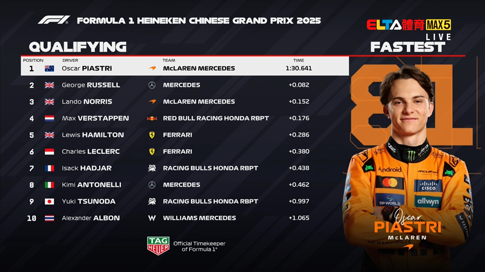

在漫長的等待之後，這次的F1中國站是2025賽季中我第一場可以完整跟完轉播的比賽！而結果呢？非常的精彩~
比賽時間表
這周末的比賽比較特別，因為這周末有衝刺賽! 這次的比賽時間表如下：(以下為台灣時間，GMT+8)
3/21
3/22
3/23
我之後再找機會寫一篇介紹這些到底分別代表什麼！
比賽回顧
- 衝刺賽
這次的比賽從衝刺賽開始就非常的精彩！衝刺排位賽中 Max Verstappen 以0.7秒的差距輸給了 Lewis Hamilton，兩個死對頭就這樣在衝刺賽的時候一起從第一排發車，讓人非常期待起跑後的比賽！

而在衝刺賽的時候，Lewis Hamilton成功的擋住了後面其他人的攻勢，獲得了第一名!這也是他跳槽到Ferrari後第一次獲得第一名！我畢竟不是賽評，我也真不知道要怎麼說...
有興趣的可以看F1所剪的精采片段！F1的影片不給我用嵌入的，只能放連結
- 正賽
好正賽才是最有看頭的地方，排位賽的時候Oscar Piastri成功的拿下了第一名，能夠在正賽的時候以第一位起跑，這也是他的F1生涯第一次拿到杆位(Pole Position)！
開賽之後，在第一圈馬上就有撞況發生！Charles Leclerc 在第一個彎道就跟他自己的隊友Lewis Hamilton發生了碰撞，讓Leclerc的賽車前鼻翼受損，Hamilton則沒受到甚麼影響。
仔細看前鼻翼的左邊，那本來應該是要跟右邊一樣有一片往上勾的部份的(在圖片的邊邊)，結果因為碰撞整片掉下來了...

本來Ferrari的工程師算起來會影響20~30%的下壓力，造成車應該會更慢更難開，結果Leclerc反而比車子完好的Hamilton還快??? Ferrari真的什麼都反著來...，虧他們還是場上歷史最悠久的車隊勒 (從F1第一場賽季他們就在了，至今75年！)
在這一切發生的時候，Fernando Alonso則是因為後輪煞車起火而不得已只好退賽，他今年至今兩場都沒有完賽呢...(前一場在澳洲的時候自撞退賽)
有興趣的一樣可以看F1剪的精采片段!F1的影片不給我用嵌入的，只能放連結
- 結果
在這之後的比賽就沒有太多事情發生，只有最後的時候Lando Norris的煞車似乎出了點問題，差一點就在最後一圈的時候被第三名的George Russell超越了！(倒數三圈的時候本來還有5、6秒的領先，都在最後一圈消失掉！)
最後的結果是：

Oscar Piastri全程都完美的維持著領先，是他F1生涯中的第二勝！(第一勝在去年！)
就如同圖中pts那欄所寫的，每一場比賽過後，前10名會獲得相對應的分數，而這些分數也會在賽季最後結算，第一名的車手會獲頒獎杯跟獲得可以使用車手號碼1號的特權！而車隊們則會因為排名的前後獲得不同數目的獎金，直接影響了他們來年有沒有錢研發賽車！
- 賽後Drama?
每一場F1賽後，FIA，也就是F1執法的單位，會隨機選幾輛車來做賽後檢查，確定大家都有遵守各項規定！如果沒有？直接取消資格！
以往很少有人會被因為檢查出什麼違規而被取消資格，但這次的中國站不太一樣，有幾個人真的被淘汰！
這些人包括了第5名的Charles Leclerc，因為賽後檢查發現賽車過輕而被取消資格!F1 2025年的規則規定每輛賽車不含汽油最輕800KG，Leclerc的車？799KG，低於規定所以取消成績，分數歸零...
第11名的Pierre Gasly也是因為一模一樣的問題而被取消資格！1KG可能感覺還好，但在F1這個以千分之1秒定勝負的地方，區區1KG也可以造成很大的差異!
而第6名，也是Leclerc的隊友的Lewis Hamilton則是因為車子底盤過低而同樣被取消資格！每輛F1賽車底盤都會有一片叫做Plank的板子，厚度是10mm，如果比賽結束後這片板子的厚度低於9mm，代表車子底盤過低，會被取消資格！
Hamilton的車底部的板子被量出厚度8.6mm，所以也被取消資格！這也代表Ferrari所有得分都被歸零，天啊
而剩下的車手名次則自動遞補，所以最終的排名是：

結語
這次的中國站真的是非常精彩，不只是比賽本身，賽後的Drama也是非常的多，我看得很開心！這麼說好像怪怪的呵呵
這是我第一次寫這種文章，感謝有看到這裡的你，我之後會寫更多關於F1各項規則的文章，希望能讓更多人認識F1這項運動！
如果有任何意見或想看的內容都歡迎跟我說！